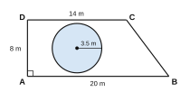

| පරීක්ෂකගේ ප්රයෝජනය සඳහා පමණි | |
|---|---|
| I කොටස – A | / 30 |
| I කොටස – B | / 20 |
| II කොටස | / 50 |
| එකතුව | / 100 |
A කොටස – සියලුම ප්රශ්නවලට දී ඇති ඉඩෙහි පිළිතුරු සපයන්න. (එකකට ලකුණු 2)
50, 46, 42, 38, … සංඛ්යා රටාවේ 10 වන පදය සොයන්න.
110102 − 10112 හි අගය සොයා පිළිතුර දෙකේ පාදයෙන් දෙන්න.
0.375 සරලම ආකාරයේ භාගයක් ලෙස ලියන්න.
සිසුවෙක් ලකුණු 60 න් 42 ක් ලබා ගත්තේය. මෙය ප්රතිශතයක් ලෙස දක්වන්න.
ප්රසාරණය කරන්න: (a + 3b)(a − 3b)
සුළු කරන්න: (a2b)3 ÷ a4b
47 850 ආසන්න දහසට වටයන්න.
විසඳන්න: 4 − 3x = 2x − 11
AB සරල රේඛාවක සිට 3 cm දුරින් තලයක පිහිටි ලක්ෂ්යවල පථය විස්තර කරන්න.
ABC ත්රිකෝණයේ Ĉ = 90° හා Â = 2B̂ වේ. B̂ සොයන්න.
වෘත්තයක පරිධිය 132 cm වේ. එහි අරය සොයන්න. (π = 227)
9 cm, 12 cm හා 15 cm සෘජුකෝණී ත්රිකෝණයක පාද විය හැකිද? හේතුව දක්වන්න.
2 < 2x ≤ 10 තෘප්ත කරන සියලු නිඛිල x ලියන්න.
n(U) = 30 හා n(A) = 18 වේ. n(A′) සොයන්න.
C = 2πr සූත්රයේ r උක්තය කරන්න.
B කොටස – ප්රශ්න දෙකටම මෙම පත්රයේම පිළිතුරු සපයන්න. (එකකට ලකුණු 10)
තිරස් බිමේ P ලක්ෂ්යයක් සිරස් FT කුළුණක පාදය F සිට 30 m දුරින් ඇත. P සිට කුළුණේ මුදුන T හි ආරෝහණ කෝණය 40° වේ.
U = {1, 2, 3, …, 12}, A = {2 හි ගුණාකාර} හා B = {3 හි ගුණාකාර} යනු U හි උපකුලක වේ.
ප්රශ්න පහකට පමණක් පිළිතුරු සපයන්න. (එකකට ලකුණු 10)
කුලී රථයක් ස්ථාවර ගාස්තුවක් ලෙස රු. 100 ක් හා කිලෝමීටරයකට රු. 80 ක් අය කරයි. x km ගමනක ගාස්තුව y (රුපියල්) y = 80x + 100 මගින් දෙනු ලැබේ.
| x (km) | 0 | 1 | 2 | 3 | 4 | 5 |
|---|---|---|---|---|---|---|
| y (රු.) | 100 | … | 260 | … | … | 500 |
පහත නිර්මාණ සඳහා cm/mm පරිමාණයක් සහිත සරල දාරයක් හා කවකටුවක් පමණක් භාවිත කරන්න. සියලු නිර්මාණ රේඛා දක්වන්න.
ABCD යනු AB ∥ DC හා DÂB = 90° වූ සෘජු ත්රපීසියම හැඩැති උද්යානයකි. AB = 20 m, DC = 14 m හා AD = 8 m වේ. උද්යානයේ අරය 3.5 m වූ වෘත්තාකාර මල් පාත්තියක් ඇත. (π = 22/7)
